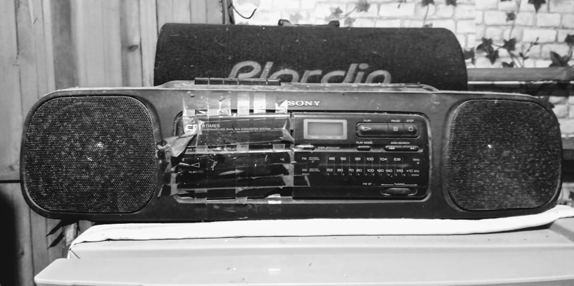
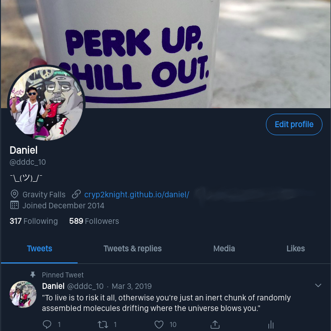
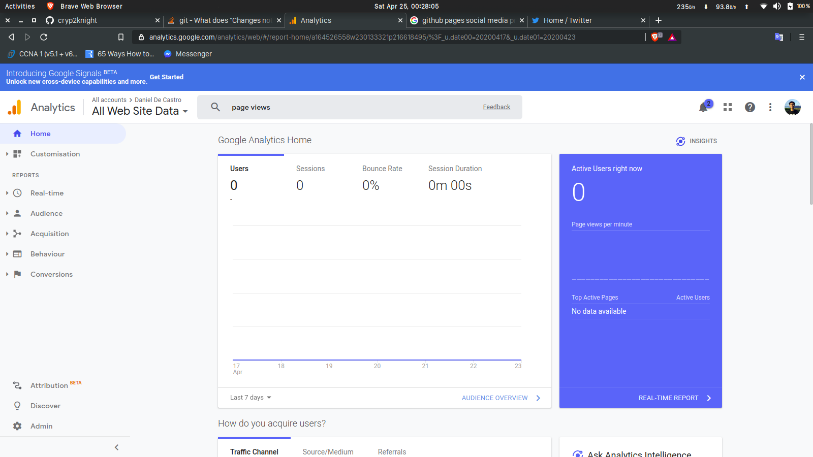
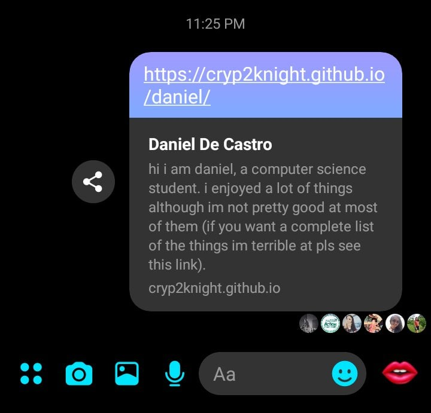

Brrrt.. Brrtttt... What’s weirder than being awakened by this sound? As the confirmation of the 3rd wave of the ECQ echo from our radio, I can’t help but think of the activities that I have planned to be postponed again. But then I'm not surprised, with the current progress of this pandemic the situation might last for long. So I asked myself, what should I do while I still have this much time to waste? Two answers came up, first, learn Russian, and second, make my website and start blogging. Yeah yeah, I know that I can do both ;)

So I searched for tutorials about free web hosting and GitHub Pages is the best fit for what I'm about to do. I grabbed my laptop and started building my simple webpage. It took me 2 hours to copy-pasta some codes and finish my content. After publishing the site, I was satisfied with the results so I started adding this to every social media profile that I have. Now, I have a so-called personal website that I could share with anyone. But I also want to know if people are cool enough to visit and view my page. And that’s when I headed to Google Analytics.

Again, after watching some youtube tutorials I discovered the tempting power of Google Analytics. Although I have some active projects that are using Google products like FireBase which comes with Google analytics I have not focused on the analytics part for the reason that most of my projects are unfinished and still in the development phase. I was amazed that you can track the page views of your webpage with just a few lines of code in google analytics. As I was excited and hyped to see that the number of my page-views increases, I sent the link of my site to my friends and group chats I was in. Sadly, only a few of them (in this context few means less than five) have visited my page (as what the data shows).

To end this day, I decided to finish my first blog. At first, I don’t know what to write about because I was thinking of a cool-topic for this kick-off. But then I was told (by myself) “why just don’t write about your day (and your low-key frustrations)” and I did. I hope you enjoyed reading my first blog and I wish you the best for the days to come.